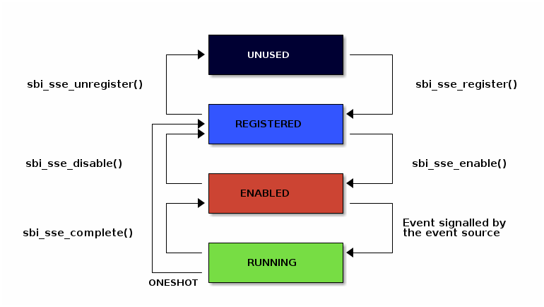

17.1. Supervisor Software Events Extension (EID #0x535345 "SSE")
The SBI Supervisor Software Events (SSE) extension provides a mechanism to inject software events from an SBI implementation to supervisor software such that it preempts all other traps and interrupts. The supervisor software will receive software events only on harts which are ready to receive them. A software event is delivered only after supervisor software has registered an event handler and enabled the software event.
The software events are one of two types: local or global. A local software event is local to a hart and can be handled only on that hart whereas a global software event is a system event and can be handled by any participating hart.
17.1.1. Software Event Identification
Each software event is identified by a unique 32-bit unsigned integer called
event_id. The event_id space is divided into multiple 16-bit ranges where
each 16-bit range is encoded as follows:
event_id[14:14] = Platform (0: Standard event, 1: Platform specific event)
event_id[15:15] = Global (0: Local event, 1: Global event)The Table 1 below show the complete event_id space along
with standard events based on the above encoding.
| Software Event ID | Description |
|---|---|
Range 0x00000000 - 0x0000ffff |
|
0x00000000 |
Local High Priority RAS event |
0x00000001 |
Local double trap event |
0x00000002 - 0x00003fff |
Local events reserved for future use |
0x00004000 - 0x00007fff |
Platform specific local events |
0x00008000 |
Global High Priority RAS event |
0x00008001 - 0x0000bfff |
Global events reserved for future use |
0x0000c000 - 0x0000ffff |
Platform specific global events |
Range 0x00010000 - 0x0001ffff |
|
0x00010000 |
Local PMU overflow event (depends on overflow IRQ) |
0x00010001 - 0x00013fff |
Local events reserved for future use |
0x00014000 - 0x00017fff |
Platform specific local events |
0x00018000 - 0x0001bfff |
Global events reserved for future use |
0x0001c000 - 0x0001ffff |
Platform specific global events |
… |
|
Range 0x00100000 - 0x0010ffff |
|
0x00100000 |
Local Low Priority RAS event |
0x00100001 - 0x00103fff |
Local events reserved for future use |
0x00104000 - 0x00107fff |
Platform specific local events |
0x00108000 |
Global Low Priority RAS event |
0x00108001 - 0x0010bfff |
Global events reserved for future use |
0x0010c000 - 0x0010ffff |
Platform specific global events |
… |
|
Range 0xffff0000 - 0xffffffff |
|
0xffff0000 |
Software injected local event |
0xffff0001 - 0xffff3fff |
Local events reserved for future use |
0xffff4000 - 0xffff7fff |
Platform specific local events |
0xffff8000 |
Software injected global event |
0xffff8001 - 0xffffbfff |
Global events reserved for future use |
0xffffc000 - 0xffffffff |
Platform specific global events |
Local double trap event: For SSE double trap events to be generated,
supervisor software MUST enable the double trap feature (DOUBLE_TRAP)
via the Firmware Feature extension ([sbi_firmware_features_extension]).
|
17.1.2. Software Event States
At any point in time, a software event MUST be in one of the following states:
-
UNUSED - Software event is not used by supervisor software
-
REGISTERED - Supervisor software has provided an event handler for the software event
-
ENABLED - Supervisor software is ready to handle the software event
-
RUNNING - Supervisor software is handling the software event
A global software event MUST be registered and enabled only once by any hart. By default, a global software event will be routed to any hart which is ready to receive software events but supervisor software can provide a preferred hart to handle this software event. The state of a global software event MUST be common to all harts.
| The preferred hart assigned to a global software event by the supervisor software is only a hint about supervisor software’s preference. The SBI implementation may choose a different hart for handling the global software event to avoid an inter-processor interrupt. |
A local software event MUST be registered and enabled by all harts which want to handle this event. A local event is delivered to a hart only when the hart is ready to receive software events and the local event is registered and enabled on that hart. The state of a local software event MUST be tracked separately for each hart.
If a software event in RUNNING state is signalled by the event source
again, the software event will be taken only after the running event handler
completes, provided that supervisor software doesn’t disable the software
event upon completion.
|
The Figure 1 below shows the state transitions of a software event.

17.1.3. Software Event Priority
Each software event has an associated priority (referred as event_priority)
which is used by an SBI implementation to select a software event for
injection when multiple software events are pending on the same hart.
The priority of a software event is a 32-bit unsigned integer where lower value means higher priority. By default, all software events have event priority as zero.
If two or more software events have same priority on a given hart then the
SBI implementation must use event_id for tie-breaking where lower event_id
has higher priority.
A higher priority software event, unless disabled by supervisor software,
always preempts a lower priority software event in RUNNING state on
the same hart. Once a higher priority software event is completed, the
previous lower priority software event will be resumed.
17.1.4. Software Event Attributes
A software event can have various XLEN bits wide attributes associated to it
where each event attribute is identified by a unique 32-bit unsigned integer
called attr_id. A software event attribute has Read-Only or Read-Write
access permissions. The Table 2 below provides a list
event attributes.
| Attribute Name | Attribute ID (attr_id) |
Access (RO / RW) |
Description |
|---|---|---|---|
STATUS |
0x00000000 |
RO |
Status of the software event which is encoded as follows: |
PRIORITY |
0x00000001 |
RW |
Software event priority where only lower 32-bits of the value are used and
other bits are always set to zero. This attribute can be updated only when
the software event is in |
CONFIG |
0x00000002 |
RW |
Additional configuration of the software event. This attribute can be
updated only when the software event is in |
PREFERRED_HART |
0x00000003 |
RW (global) |
Hart ID of the preferred hart that should handle the global software event.
The value of this attribute must always be valid hart ID for both local and
global software events. This attribute is read-only for local software events
and for global software events it can be updated only when the software event
is in |
ENTRY_PC |
0x00000004 |
RO |
Entry program counter value for handling the software event in supervisor
software. The value of this event attribute MUST be 2-bytes aligned. |
ENTRY_ARG |
0x00000005 |
RO |
Entry argument (or parameter) value for handling the software event in
supervisor software. This attribute value is passed to the supervisor
software via |
INTERRUPTED_SEPC |
0x00000006 |
RW |
Interrupted |
INTERRUPTED_FLAGS |
0x00000007 |
RW |
Interrupted flags which are saved before handling the software event in
supervisor software. This attribute can be updated only when the
software event is in |
INTERRUPTED_A6 |
0x00000008 |
RW |
Interrupted |
INTERRUPTED_A7 |
0x00000009 |
RW |
Interrupted |
RESERVED |
> 0x00000009 |
--- |
Reserved for future use. |
17.1.5. Software Event Injection
To inject a software event on a hart, the SBI implementation must do the following:
-
Save interrupted state of supervisor mode
-
Set
INTERRUPTED_FLAGSevent attribute as follows:-
INTERRUPTED_FLAGS[0:0]= interruptedsstatus.SPPCSR bit value -
INTERRUPTED_FLAGS[1:1]= interruptedsstatus.SPIECSR bit value -
if H-extension is available to supervisor mode:
-
Set
INTERRUPTED_FLAGS[2:2]= interruptedhstatus.SPVCSR bit value -
Set
INTERRUPTED_FLAGS[3:3]= interruptedhstatus.SPVPCSR bit value
-
-
else
-
Set
INTERRUPTED_FLAGS[3:2]= zero
-
-
if
Zicfilpextension is available to supervisor mode:-
INTERRUPTED_FLAGS[4:4]= interruptedsstatus.SPELPCSR bit value
-
-
else
-
INTERRUPTED_FLAGS[4:4]= zero
-
-
if
Ssdbltrpextension is available to supervisor mode:-
INTERRUPTED_FLAGS[5:5]= interruptedsstatus.SDTCSR bit value
-
-
else
-
INTERRUPTED_FLAGS[5:5]= zero
-
-
Set
INTERRUPTED_FLAGS[XLEN-1:6]= zero
-
-
Set
INTERRUPTED_SEPCevent attribute = interruptedsepcCSR -
Set
INTERRUPTED_A6event attribute = interruptedA6GPR value -
Set
INTERRUPTED_A7event attribute = interruptedA7GPR value
-
-
Redirect execution to supervisor event handler
-
Set
A6GPR = Current Hart ID -
Set
A7GPR =ENTRY_ARGevent attribute value -
Set
sepc= Interrupted program counter value -
Set
sstatus.SPPCSR bit = interrupted privilege mode -
Set
sstatus.SPIECSR bit =sstatus.SIECSR bit value -
Set
sstatus.SIECSR bit = zero -
if
Zicfilpextension is available to supervisor mode:-
Set
sstatus.SPELP= interrupted landing pad state -
Set landing pad state = NO_LP_EXPECTED
-
-
if H-extension is available to supervisor mode:
-
Set
hstatus.SPVCSR bit = interrupted virtualization state -
if
hstatus.SPVCSR bit == 1:-
Set
hstatus.SPVPCSR bit =sstatus.SPPCSR bit value
-
-
-
if
Ssdbltrpextension is available to supervisor mode:-
Set S-mode-disable-trap = 1
-
-
Set virtualization state = OFF
-
Set privilege mode = S-mode
-
Set program counter =
ENTRY_PCevent attribute value
-
17.1.6. Software Event Completion
After handling the software event on a hart, the supervisor software must
notify the SBI implementation about completion of event handling using
sbi_sse_complete call. The SBI implementation must do the following to
resume the interrupted state for a completed event:
-
Set program counter =
sepcCSR value -
Set privilege mode =
sstatus.SPPCSR bit value -
if
Ssdbltrpextension is available to supervisor mode:-
Set
sstatus.SDTCSR bit =INTERRUPTED_FLAGS[5:5]event attribute value
-
-
if
Zicfilpextension is available to supervisor mode:-
Set
sstatus.SPELPCSR bit =INTERRUPTED_FLAGS[4:4]event attribute value
-
-
if H-extension is available to supervisor mode:
-
Set virtualization state =
hstatus.SPVCSR bit value -
Set
hstatus.SPVCSR bit =INTERRUPTED_FLAGS[2:2]event attribute value -
Set
hstatus.SPVPCSR bit =INTERRUPTED_FLAGS[3:3]event attribute value
-
-
Set
sstatus.SIECSR bit =sstatus.SPIECSR bit -
Set
sstatus.SPIECSR bit =INTERRUPTED_FLAGS[1:1]event attribute value -
Set
sstatus.SPPCSR bit =INTERRUPTED_FLAGS[0:0]event attribute value -
Set
A7GPR =INTERRUPTED_A7event attribute value -
Set
A6GPR =INTERRUPTED_A6event attribute value -
Set
sepc=INTERRUPTED_SEPCevent attribute value
If the supervisor software wishes to resume from a different location,
it can update the event attributes of the software event before calling
sbi_sse_complete.
17.1.7. Function: Read software event attributes (FID #0)
struct sbiret sbi_sse_read_attrs(uint32_t event_id,
uint32_t base_attr_id, uint32_t attr_count,
unsigned long output_phys_lo,
unsigned long output_phys_hi)Read a range of event attribute values from a software event.
The event_id parameter specifies the software event ID whereas base_attr_id
and attr_count parameters specifies the range of event attribute IDs.
The event attribute values are written to a output shared memory which is
specified by the output_phys_lo and output_phys_hi parameters where:
-
The
output_phys_loparameter MUST beXLEN / 8bytes aligned -
The size of output shared memory is assumed to be
(XLEN / 8) * attr_count -
The value of event attribute with ID
base_attr_id + ishould be written at offset(XLEN / 8) * (base_attr_id + i)
In case of an error, the possible error codes are shown in the Table 3 below:
| Error code | Description |
|---|---|
SBI_SUCCESS |
Event attribute values read successfully. |
SBI_ERR_NOT_SUPPORTED |
|
SBI_ERR_INVALID_PARAM |
|
SBI_ERR_BAD_RANGE |
One of the event attribute IDs in the range
specified by |
SBI_ERR_INVALID_ADDRESS |
The shared memory pointed to by the
|
SBI_ERR_FAILED |
The read failed for unspecified or unknown other reasons. |
17.1.8. Function: Write software event attributes (FID #1)
struct sbiret sbi_sse_write_attrs(uint32_t event_id,
uint32_t base_attr_id, uint32_t attr_count,
unsigned long input_phys_lo,
unsigned long input_phys_hi)Write a range of event attribute values to a software event.
The event_id parameter specifies the software event ID whereas base_attr_id
and attr_count parameters specifies the range of event attribute IDs.
The event attribute values are read from a input shared memory which is
specified by the input_phys_lo and input_phys_hi parameters where:
-
The
input_phys_loparameter MUST beXLEN / 8bytes aligned -
The size of input shared memory is assumed to be
(XLEN / 8) * attr_count -
The value of event attribute with ID
base_attr_id + ishould be read from offset(XLEN / 8) * (base_attr_id + i)
For local events, the event attributes are updated only for the calling hart. For global events, the event attributes are updated for all the harts.
The possible error codes returned in sbiret.error are shown in
Table 4 below. In case of errors with attribute values,
the first error encountered (based on attributes ID order) is returned.
| Error code | Description |
|---|---|
SBI_SUCCESS |
Event attribute values written successfully. |
SBI_ERR_NOT_SUPPORTED |
|
SBI_ERR_INVALID_PARAM |
Attribute write operation failed because either: |
SBI_ERR_DENIED |
|
SBI_ERR_INVALID_STATE |
|
SBI_ERR_BAD_RANGE |
One of the event attribute IDs in the range
specified by |
SBI_ERR_INVALID_ADDRESS |
The shared memory pointed to by the
|
SBI_ERR_FAILED |
The write failed for unspecified or unknown other reasons. |
17.1.9. Function: Register a software event (FID #2)
struct sbiret sbi_sse_register(uint32_t event_id,
unsigned long handler_entry_pc,
unsigned long handler_entry_arg)Register an event handler for the software event.
The event_id parameter specifies the event ID for which an event handler
is being registered. The handler_entry_pc parameter MUST be 2-bytes aligned
and specifies the ENTRY_PC event attribute of the software event whereas
the handler_entry_arg parameter specifies the ENTRY_ARG event attribute
of the software event.
For local events, the event is registered only for the calling hart. For global events, the event is registered for all the harts.
The event MUST be in UNUSED state otherwise this function will fail.
It is advisable to use different values for handler_entry_arg for
different events because higher priority events preempt lower priority
events.
|
Upon success, the event state moves from UNUSED to REGISTERED. In case
of an error, possible error codes are listed in Table 5
below.
| Error code | Description |
|---|---|
SBI_SUCCESS |
Event handler is registered successfully. |
SBI_ERR_NOT_SUPPORTED |
|
SBI_ERR_INVALID_STATE |
|
SBI_ERR_INVALID_PARAM |
|
17.1.10. Function: Unregister a software event (FID #3)
struct sbiret sbi_sse_unregister(uint32_t event_id)Unregister the event handler for given event_id.
For local events, the event is unregistered only for the calling hart. For global events, the event is unregistered for all the harts.
The event MUST be in REGISTERED state otherwise this function will fail.
Upon success, the event state moves from REGISTERED to UNUSED. In case
of an error, possible error codes are listed in Table 6
below.
| Error code | Description |
|---|---|
SBI_SUCCESS |
Event handler is unregistered successfully. |
SBI_ERR_NOT_SUPPORTED |
|
SBI_ERR_INVALID_STATE |
|
SBI_ERR_INVALID_PARAM |
|
17.1.11. Function: Enable a software event (FID #4)
struct sbiret sbi_sse_enable(uint32_t event_id)Enable the software event specified by the event_id parameter.
For local events, the event is enabled only for the calling hart. For global events, the event is enabled for all the harts.
The event MUST be in REGISTERED state otherwise this function will fail.
Upon success, the event state moves from REGISTERED to ENABLED. In case
of an error, possible error codes are listed in Table 7
below.
| Error code | Description |
|---|---|
SBI_SUCCESS |
Event is successfully enabled. |
SBI_ERR_NOT_SUPPORTED |
|
SBI_ERR_INVALID_PARAM |
|
SBI_ERR_INVALID_STATE |
|
17.1.12. Function: Disable a software event (FID #5)
struct sbiret sbi_sse_disable(uint32_t event_id)Disable the software event specified by the event_id parameter.
For local events, the event is disabled only for the calling hart. For global events, the event is disabled for all the harts.
The event MUST be in ENABLED state otherwise this function will fail.
Upon success, the event state moves from ENABLED to REGISTERED. In case
of an error, possible error codes are listed in Table 8
below.
| Error code | Description |
|---|---|
SBI_SUCCESS |
Event is successfully disabled. |
SBI_ERR_NOT_SUPPORTED |
|
SBI_ERR_INVALID_PARAM |
|
SBI_ERR_INVALID_STATE |
|
17.1.13. Function: Complete software event handling (FID #6)
struct sbiret sbi_sse_complete(void)Complete the supervisor event handling for the highest priority event in
RUNNING state on the calling hart.
If there were no events in RUNNING state on the calling hart then this
function does nothing and returns SBI_SUCCESS otherwise it moves the
highest priority event in RUNNING state to:
-
REGISTEREDif the event is configured as one-shot (see theCONFIGattribute in Table 2.) -
ENABLEDstate otherwise
It then resumes the interrupted supervisor state as described in [_software_event_completion].
17.1.14. Function: Inject a software event (FID #7)
struct sbiret sbi_sse_inject(uint32_t event_id, unsigned long hart_id)The supervisor software can inject a software event with this function.
The event_id paramater refers to the ID of the event to be injected.
For local events, the hart_id parameter refers to the hart on which the
event is to be injected.
For global events, the hart_id parameter is ignored.
An event can only be injected if it is allowed by the event attribute as described in Table 2.
If an event is injected from within an SSE event handler, if it is ready to be run, it will be handled according to the priority rules described in 17.1.3. Software Event Priority:
-
If it has a higher priority than the one currently running, then it will be handled immediately, effectively preempting the currently running one.
-
If it has a lower priority, it will be run after the one that is currently running completes.
In case of an error, possible error codes are listed in Table 9 below.
| Error code | Description |
|---|---|
SBI_SUCCESS |
Event is successfully injected. |
SBI_ERR_NOT_SUPPORTED |
|
SBI_ERR_INVALID_PARAM |
|
SBI_ERR_FAILED |
The injection failed for unspecified or unknown other reasons. |
17.1.15. Function: Unmask software events on a hart (FID #8)
struct sbiret sbi_sse_hart_unmask(void)Start receiving (or unmask) software events on the calling hart. In other words, the calling hart is ready to receive software events from the SBI implementation.
The software events are masked initially on all harts so the supervisor software must explicitly unmask software events on relevant harts at boot-time.
In case of an error, possible error codes are listed in Table 10 below.
| Error code | Description |
|---|---|
SBI_SUCCESS |
Software events unmasked successfully on the calling hart. |
SBI_ERR_ALREADY_STARTED |
Software events were already unmasked on the calling hart. |
SBI_ERR_FAILED |
The request failed for unspecified or unknown other reasons. |
17.1.16. Function: Mask software events on a hart (FID #9)
struct sbiret sbi_sse_hart_mask(void)Stop receiving (or mask) software events on the calling hart. In other words, the calling hart will no longer be ready to receive software events from the SBI implementation.
In case of an error, possible error codes are listed in Table 11 below.
| Error code | Description |
|---|---|
SBI_SUCCESS |
Software events masked successfully on the calling hart. |
SBI_ERR_ALREADY_STOPPED |
Software events were already masked on the calling hart. |
SBI_ERR_FAILED |
The request failed for unspecified or unknown other reasons. |
17.1.17. Function Listing
| Function Name | SBI Version | FID | EID |
|---|---|---|---|
sbi_sse_read_attrs |
3.0 |
0 |
0x535345 |
sbi_sse_write_attrs |
3.0 |
1 |
0x535345 |
sbi_sse_register |
3.0 |
2 |
0x535345 |
sbi_sse_unregister |
3.0 |
3 |
0x535345 |
sbi_sse_enable |
3.0 |
4 |
0x535345 |
sbi_sse_disable |
3.0 |
5 |
0x535345 |
sbi_sse_complete |
3.0 |
6 |
0x535345 |
sbi_sse_inject |
3.0 |
7 |
0x535345 |
sbi_sse_hart_unmask |
3.0 |
8 |
0x535345 |
sbi_sse_hart_mask |
3.0 |
9 |
0x535345 |